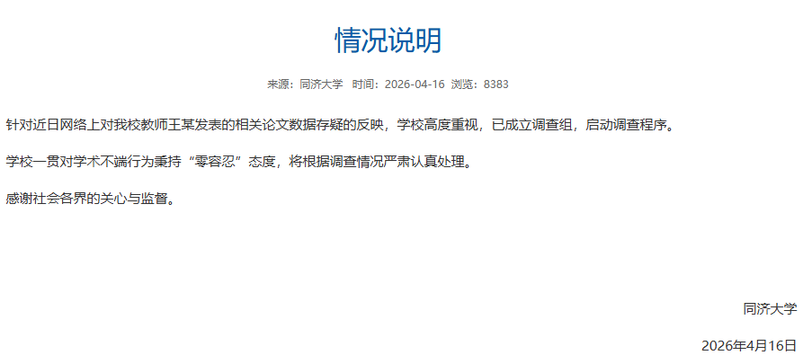
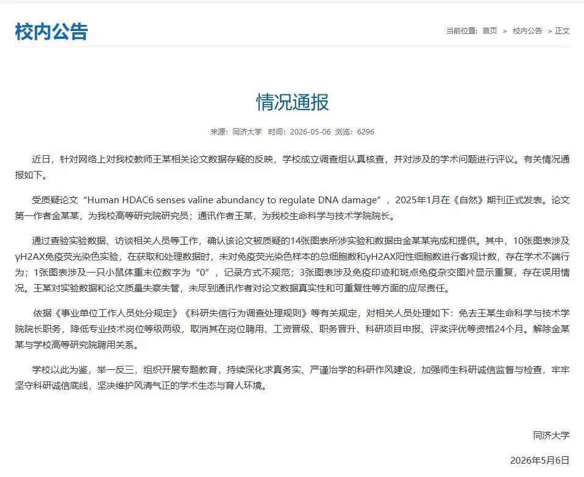

说到底，还是造假成本太低，打假成本太高
原文：https://mp.weixin.qq.com/s?__biz=MzAwMzIzOTk5OQ==&mid=2247537733&idx=2&sn=be9bf9e706895ecb6320bce4d1cef525&chksm=9b3c2d15ac4ba403d7142b2253be2abc737efd2f743d06f3945941b65d53ad44094a551f738b#rd 合集：漫谈胡侃
据同济大学新闻网报告，王某、金某的学术不端行为算是坐实了。虽说是零容忍，但是学术造假事件屡见不鲜，无非是造假成本太低，打假成本太高。造假的收益远远大于风险，长此以往，自然劣币逐良币。当然了，还有一个比较现实的现象是，王某作为通讯作者，未必知道这篇文章是哪来的、怎么来的？转身问问金某，还得从博后、博士一层层往下问。可能这就是当前科研体系的无奈吧。突然也能理解为什么生信工具类的文章引用量高了，生信工具好不好用，很快就能测试出来。实验结果真不真，里面的玄学问题可就多了去了。


消息来源：https://news.tongji.edu.cn/info/1008/94355.htm
如何联系我们

 留一个领取资料、开箱即用的单细胞分析镜像的微信号[Biomamba_zhushou]，方便各位随时交流。同时我们也构建了交流群矩阵，欢迎大家入群讨论。
大家可以阅读完这几篇之后添加给生信入门初学者的小贴士
没有检索，就没有发言权
留一个领取资料、开箱即用的单细胞分析镜像的微信号[Biomamba_zhushou]，方便各位随时交流。同时我们也构建了交流群矩阵，欢迎大家入群讨论。
大家可以阅读完这几篇之后添加给生信入门初学者的小贴士
没有检索，就没有发言权
已有生信基地联系方式的同学无需重复添加

 您点的每个赞和在看，我都认真当成了喜欢
您点的每个赞和在看，我都认真当成了喜欢